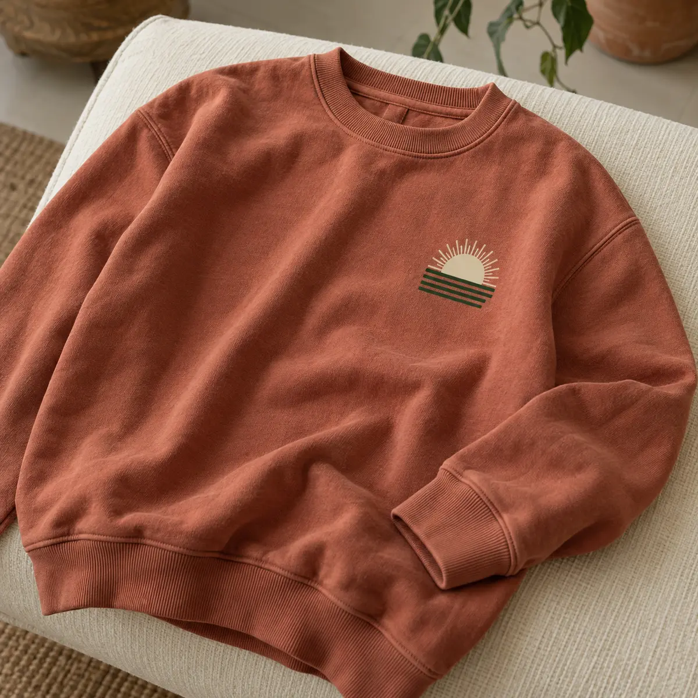

05 / Studio references
Look closer. Feel the finish.
Our work lives in the details: a clean edge of ink, a thread catching light, a full-color transfer holding a tiny line exactly where it should.

The visual archive
Surfaces, layers and marks.
Apparel concepts and finish references that show the MA2K visual direction. These illustrative studies are a starting point for your own piece.


The blank is part of the storyThe complete piece
Decoration starts before the decoration.
The garment, the color, the weight and the fit all influence how a design lands. That is why we treat the blank as part of the creative direction, not an afterthought.
What to bring
Reference the feeling.
You do not need a perfect brief. A logo, a mood, a garment reference or a simple description is enough to begin the conversation.
The artwork
Finished file, rough sketch, logo or visual reference. Bring what you have.
The garment
Tell us what you want to wear, from a heavyweight tee to a structured cap.
The audience
Who is wearing it, and what should they feel when they do?
The moment
Share the quantity and target date so the recommendation fits reality.
Your turn
Give the next piece a point of view.
Start with the details you know. We will help shape the rest.